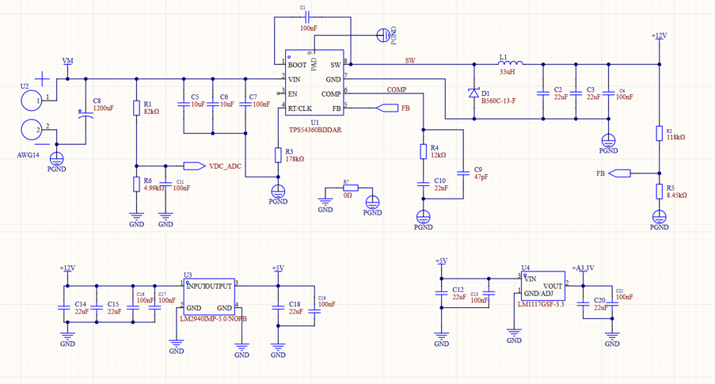
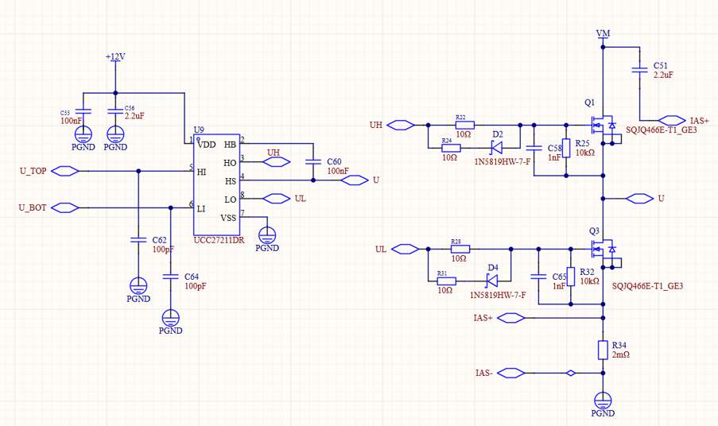
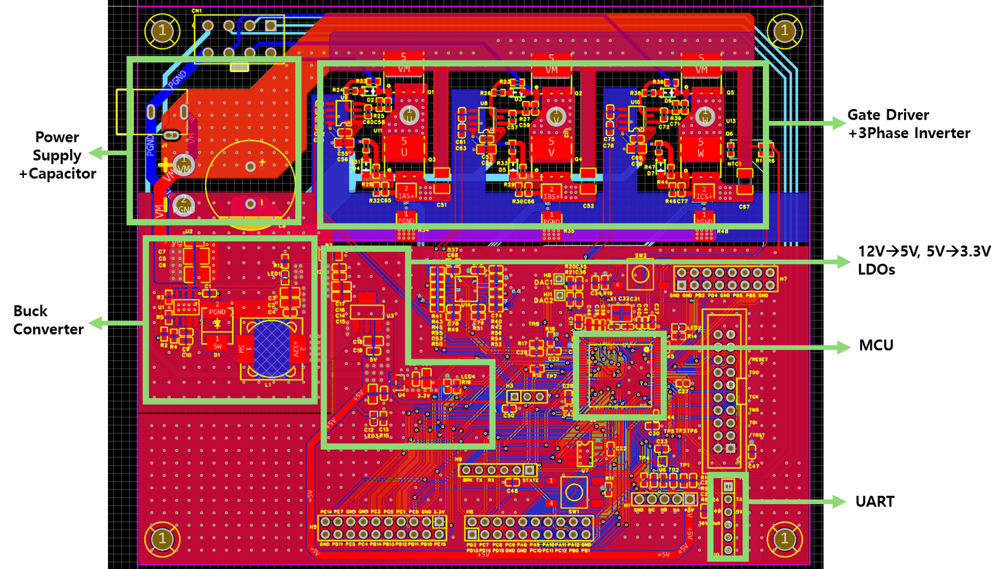
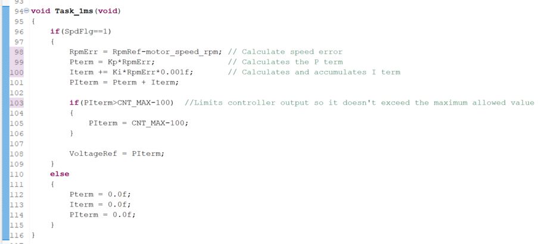

Using EasyEDA, the schematics of the circuits were drawn. On the left is the buck converter (top), and the 12V-to-5V and 5V-to-3.3V LDOs are shown at the bottom.

A 3-phase inverter was implemented to drive the BLDC motor,
using a gate driver on the left and the inverter on the right.
Only one inverter phase is shown.
The gate driver receives signals from the MCU and sends
the corresponding outputs to the inverter.
An additional resistor and diode were connected at the
MOSFET gate to compensate for slower turn-off times.
A gate-source resistor and capacitor were also added for
pull-down and self-turn-on prevention.
A capacitor was connected between VDD and ground to
reduce sudden voltage spikes.

A PCB was designed based on the schematic, including the
power supply, buck converter, LDOs, gate driver,
3-phase inverter, MCU, and UART connection for live
monitoring of the motor RPM.
A four-layer structure was used, consisting of two signal
layers, a GND layer, and a VCC layer.
Unused MCU pins were routed out to headers for possible
future use.

The motor speed was controlled using a PI controller to achieve smooth motor operation. The speed error is calculated every 1 ms from the target and measured RPM. The proportional and integral terms are then calculated and combined to generate the motor voltage reference, with the output limited to prevent exceeding the allowable control range.
A short demonstration of the BLDC motor operating under PI speed control.
The target motor speed and PID parameters can be adjusted through the Live Expressions window while debugging.
The board transmits motor RPM data to a computer via UART, which is visualized in real time using Teleplot in VS Code.